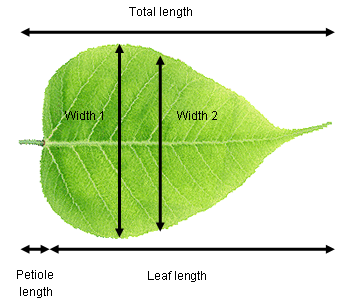

El Análisis de Componentes Principales (PCA) es una de las técnicas estadística multivariada más utilizadas. La motivación principal detrás del PCA es reducir o resumir un gran número de variables en un número menor de variables derivadas que puedan ser fácilmente visualizadas en un espacio bidimensional o tridimensional. Por ejemplo, el PCA podría ser utilizado para comparar la química de diferentes cuencas hidrográficas basado en múltiples variables o para cuantificar la variación fenotípica entre especies basado en múltiples medidas morfológicas.
El nuevo conjunto de variables creado por el PCA puede ser utilizado en otros análisis, pero más comúnmente como un nuevo conjunto de ejes en los cuales se pueden graficar los datos multivariados.
El primer componente principal (PC) se ajusta de tal manera que explique la máxima cantidad de variación en los datos. Puedes pensar en esto como una línea de mejor ajuste en el espacio multivariado, lo más cerca posible de todos los puntos con la variación maximizada a lo largo de la línea y minimizada en la dirección perpendicular a la línea. El segundo PC se ajusta en ángulo recto al primero (es decir, ortogonalmente, sin correlación) de manera que explique la mayor cantidad posible de la variación restante. Luego, se pueden ajustar componentes adicionales, que deben ser ortogonales a los componentes existentes, mediante el mismo proceso iterativo.
Visualizar esto en dos dimensiones ayuda a entender el enfoque. Los puntos de datos se graficarán en los nuevos ejes azules (los componentes principales) en lugar de los ejes originales negros. ¡Ahora imagina ajustar esas líneas en más de tres dimensiones!
Considera a una fisióloga vegetal que intenta cuantificar las diferencias en la forma de las hojas entre dos especies de árboles. Registró la longitud total (hoja + pecíolo), la longitud de la hoja, el ancho en el punto más ancho, el ancho a la mitad de la hoja y la longitud del pecíolo de diez hojas de cada especie. Estos datos son de cinco dimensiones (es decir, cinco variables medidas) y podemos usar el PCA para extraer dos nuevas variables que nos permitirán visualizar los datos en menos dimensiones.

Es muy probable que existan relaciones fuertes entre las variables en nuestro conjunto de datos de ejemplo (por ejemplo, longitud de la hoja versus longitud total). Esto significa que los componentes principales probablemente expliquen una buena parte de la variación (imagina ajustar una línea recta a lo largo de una colección de puntos con forma de salchicha en el espacio multivariado). Si todas las variables estuvieran completamente no correlacionadas entre sí, entonces el PCA no funcionaría muy bien (imagina tratar de ajustar una línea de mejor ajuste a una colección de puntos en forma de esfera en el espacio multivariado).
Tus datos deben estar formateados con las variables como columnas y las observaciones como filas. Descarga el conjunto de datos de ejemplo sobre la forma de las hojas, Leafshape.csv, importalo a R:
Leaf_shape <- read.csv(file = "Leafshape.csv", header = TRUE)La primera columna es una variable categórica que etiqueta las hojas por especie (A o B). Necesitamos extraer eso a un nuevo objeto (Especie) que podamos usar más tarde para graficar, y crear un nuevo dataframe (Datos_Hoja) con solo las variables que se analizarán mediante PCA (columnas 2-6).
Species <- Leaf_shape$Species
Leaf_data <- Leaf_shape[, 2:6]Existen varias funciones y paquetes en R disponibles para realizar PCA, uno de los más simples es la función princomp en el paquete base stats. Para ejecutar una PCA, simplemente usamos:
Leaf_PCA <- princomp(Leaf_data, cor = FALSE)Llamar a la función plot en los resultados de princomp produce un gráfico de dispersión. Este es el ordenamiento de las 20 muestras de hojas en el nuevo espacio bidimensional definido por PC1 y PC2. Aquí también podemos etiquetar las muestras por especie utilizando el argumento de color y agregar una leyenda.
plot(Leaf_PCA$scores, pch = 16, col = as.factor(Species))
legend(0, 0.4, c("Species A", "Species B"), pch = 16, col = c("black", "red"))
La interpretación del gráfico de dispersión es la misma que para cualquier gráfico de ordenación: los puntos que están cerca tienen valores similares de las variables originales (en este caso, estarían cerca en un espacio de cinco dimensiones si puedes imaginarlo).
El análisis de componentes principales produce una gran cantidad de resultados gráficos y numéricos. Para interpretar completamente los resultados, necesitas entender varias cosas:
1) ¿Cuánta varianza explica cada componente? Esto se puede encontrar utilizando el objeto summary generado por el PCA.
summary(Leaf_PCA)## Importance of components:
## Comp.1 Comp.2 Comp.3 Comp.4 Comp.5
## Standard deviation 0.8302248 0.22418865 0.11987329 0.1035367 0.0089705579
## Proportion of Variance 0.9013599 0.06572552 0.01879107 0.0140183 0.0001052315
## Cumulative Proportion 0.9013599 0.96708539 0.98587647 0.9998948 1.0000000000La proporción explicada independientemente por cada componente se proporciona en la segunda fila de la salida de summary. En este ejemplo, PC1 explica el 90% de la variación entre las dos especies, mientras que PC2 explica un 6.6% adicional. Juntos, estos dos ejes (los que ahora estás graficando) explican el 96.7% de la varianza (fila de proporción acumulativa en el resultado). Esto significa que esos datos originales en cinco dimensiones se pueden colocar casi perfectamente en este nuevo plano bidimensional.
La contribución relativa de cada componente también se puede visualizar mediante un gráfico lineal. Ten en cuenta que el eje y presentado no es el % de varianza explicada. Las contribuciones siempre disminuyen con el número de componente, e idealmente queremos que la mayor cantidad posible de variación esté explicada por los dos primeros componentes, ya que son los que utilizamos para visualizar los datos.
screeplot(Leaf_PCA, type = "lines")
2 ¿Cómo se relacionan las variables originales con los componentes principales?
Estas relaciones se pueden obtener numéricamente extrayendo las cargas del objeto producido por el PCA.
loadings(Leaf_PCA)##
## Loadings:
## Comp.1 Comp.2 Comp.3 Comp.4 Comp.5
## Total_length 0.772 0.244 0.582
## Petiole_length 0.458 -0.169 0.647 -0.586
## Leaf_length 0.320 0.428 -0.627 -0.564
## Width1 -0.949 0.160 -0.215 -0.163
## Width2 -0.300 -0.259 0.826 0.400
##
## Comp.1 Comp.2 Comp.3 Comp.4 Comp.5
## SS loadings 1.0 1.0 1.0 1.0 1.0
## Proportion Var 0.2 0.2 0.2 0.2 0.2
## Cumulative Var 0.2 0.4 0.6 0.8 1.0Las cargas son correlaciones simples entre los componentes principales y las variables originales (correlación de Pearson r). Los valores más cercanos a 1 (positivos) o -1 (negativos) representarán las relaciones más fuertes, mientras que cero representa la falta de correlación.
En este ejemplo, puedes observar que PC1 está correlacionado positivamente con las dos variables de anchura. R no muestra correlaciones muy bajas, por lo que también puedes ver que PC1 no está correlacionado con las tres variables de longitud. Dado que las dos especies están separadas a lo largo del eje x en el gráfico de dispersión (PC1), ahora sabemos que la especie A con valores altos de PC1 tiene hojas más anchas que la especie B con valores bajos de PC1. También sabemos que las hojas hacia la parte superior del gráfico son las más largas debido a las correlaciones positivas entre PC2 y las tres variables de longitud (pero esto no separa a las dos especies en el gráfico).
También puedes producir un biplot con las relaciones entre las variables originales y los componentes principales superpuestas en el gráfico de puntuación. Las variables originales (en rojo) tendrán una fuerte relación con uno de los componentes principales si son paralelas a ese componente (por ejemplo, Width 1 y PC1) y las flechas más largas representan correlaciones más fuertes.
biplot(Leaf_PCA)
Linealidad. El PCA funciona mejor cuando la relación entre las variables es aproximadamente lineal. En ausencia de linealidad, es mejor transformar las variables (por ejemplo, transformación logarítmica) antes del análisis.
Matrices de correlación frente a covarianza. Puedes realizar PCA utilizando una matriz de covarianza, lo cual es apropiado cuando todas las variables se miden en la misma escala, o una matriz de correlación, lo cual es apropiado si las variables se miden en escalas muy diferentes. Esto producirá resultados diferentes debido a que el uso de una matriz de covarianza se ve afectado por las diferencias en el tamaño de las varianzas entre las variables. Los investigadores también suelen estandarizar las variables antes del análisis si desean que las variables medidas en diferentes escalas tengan una influencia igual en los resultados.
Cambia entre estas dos opciones con el argumento cor en la función princomp.
Leaf_PCA <- princomp(Leaf_data, cor = FALSE) # utiliza una matriz de covarianza
Leaf_PCA2 <- princomp(Leaf_data, cor = TRUE) # utiliza una matriz de correlaciónValores atípicos. Los valores atípicos pueden tener una gran influencia en los resultados del ACP, especialmente cuando se utiliza una matriz de covarianza.
Rotación de ejes. La función princomp produce un análisis de componentes principales no rotado. Existen opciones en otros paquetes de R para rotar los componentes principales después de haber sido derivados, con el objetivo de obtener una salida más fácil de interpretar (por ejemplo, donde las cargas dentro de un componente sean cercanas a uno o cero). Existen varios métodos para hacer esto, y necesitarías leer más que este módulo de ayuda antes de intentar dichos métodos.
Escrito. En la sección de resultados, sería típico indicar la cantidad de variación explicada por los dos (o tres) primeros componentes principales y la contribución de diferentes variables a esos componentes principales. En este ejemplo, indicarías que el primer componente principal explica el 90% de la variación en la morfología de las hojas y está más fuertemente relacionado con el ancho de la hoja en su punto más ancho.
Visual. Los resultados del ACP se presentan mejor visualmente como un gráfico de ordenación bidimensional o, raramente, tridimensional (ver arriba) donde la posición de cada observación representa su posición en relación a los dos (o tres) primeros componentes principales. Es común etiquetar los puntos de alguna manera para buscar patrones en el gráfico (como etiquetamos las hojas por especie arriba).
Escribe ?princomp para obtener ayuda en R sobre esta función.
Una página interactiva interesante que te ayudará a comprender qué hace el ACP se encuentra aquí.
Quinn, GP y MJ Keough (2002) Experimental design and data analysis for biologists. Cambridge University Press. Cap. 17. Componentes principales y análisis de correspondencia.
McKillup, S (2012) Statistics explained. An introductory guide for life scientists.. Cambridge University Press. Cap. 22. Conceptos introductorios del análisis multivariado.
Autor: Andrew Letten
Año: 2016
Última actualización: Jun. 2023